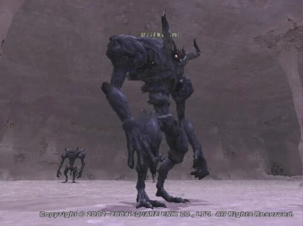
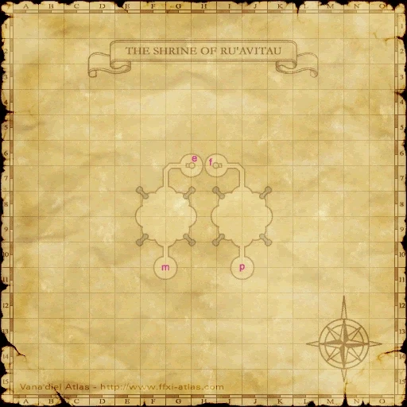

Level 75 reference · Zenith rules
|
Job: Notorious Monster |
 Image source |


|
Zone |
Level |
Drops |
Steal |
Spawns |
Notes | ||||||
|
85-87 |
1 |
| |||||||||
|
HP = Detects Low HP; M = Detects Magic; Sc = Follows by Scent; T(S) = True-sight; T(H) = True-hearing JA = Detects job abilities; WS = Detects weaponskills; Z(D) = Asleep in Daytime; Z(N) = Asleep at Nighttime | |||||||||||


Image source
Notes:
- Spawned by trading a Diorite to the ??? at (F-8).
- Killable by: 12 characters level 70+, 6 characters level 74-75; Solo as RDM75/NIN37; Duo with BLM75/WHM37 and NIN75/WAR37
- Special Attacks: Banishga III, Diaga II, Flash
- Only uses Heavy Strike for TP moves
- Spams Heavy Strike over and over and over below 40% HP.
Adapted from Eden Wiki: Ullikummi · Contributors and history · CC BY-SA 4.0. Revision 1957. Layout, links and optional background text adapted for Zenith.